Camino Frances (The French Way)
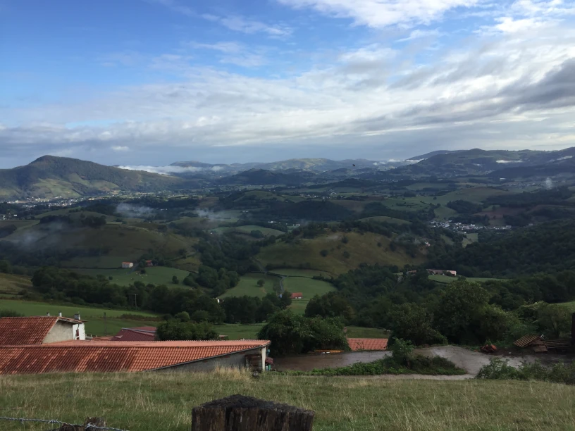
The Camino Francés, or "The French Way," is the most popular route of the Camino de Santiago. It begins just across the Spanish border in Saint-Jean-Pied-de-Port, France (SJPDP), a charming and picturesque town known for its steep hills and cobblestone streets. Here, you will register at the Pilgrim's Office to officially start your Camino. At registration, you will receive a Credencial del Peregrino (Pilgrim's Passport), a booklet you will get stamped each night by the hospitaleros at your albergue (pilgrim hostel). Be sure to take good care of this passport—it serves as proof of your journey and is required to receive your Compostela (the official certificate of completion) in Santiago. It is also a wonderful keepsake, as each albergue has its own unique stamp.
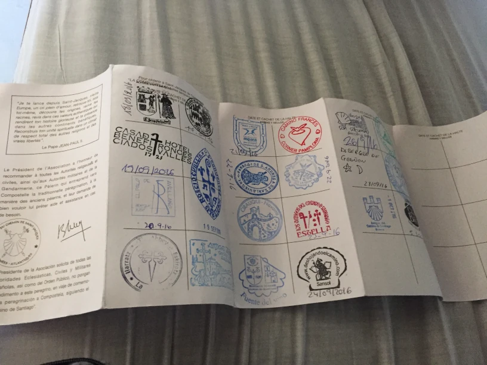
While in SJPDP, take some time to visit the Citadel of Mendiguren, located near the main albergue. It offers stunning views of the Pyrenees, the mountain range you'll cross on your first day. Make sure you get a good night's sleep before starting—this stretch is often considered one of the toughest sections of the Camino. The climb up and over the Pyrenees is physically demanding, even for experienced walkers. For those unsure about their physical condition or facing health concerns, skipping this section by taxi or bus to Pamplona is a practical option. Safety and health should always come first on the Camino.
Pamplona
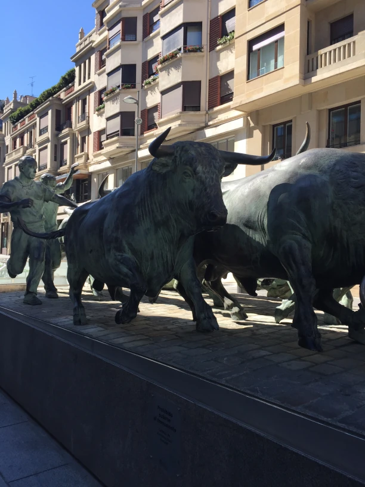
Before reaching Pamplona, you'll pass through and likely spend the night in a few small villages. Pamplona itself is a vibrant, medium-sized city famously known for the Running of the Bulls during the San Fermín festival. It offers plenty of lodging options, including the main Municipal Albergue, which is conveniently located for pilgrims. If you didn't start your Camino in Saint-Jean-Pied-de-Port, you can still obtain your Credencial del Peregrino (Pilgrim's Passport) at the Municipal Albergue. However, keep in mind that this albergue is often crowded, with bunk beds stacked three high. While in Pamplona, make time to visit the impressive Citadel of Pamplona, a well-preserved star-shaped fortress with stunning walls and green spaces. Its history includes being captured by Napoleon Bonaparte in a surprise attack.
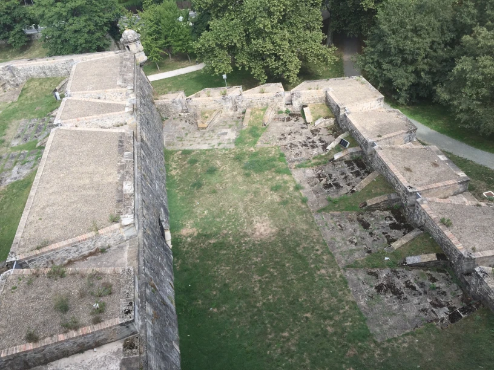
Logroño and the Bodegas Irache
The next major city on the Camino Francés is Logroño, renowned for its vibrant wine culture and the famous autumn wine festival. However, before reaching Logroño, you'll pass through the small town of Estella, home to one of the Camino's most memorable highlights: the Bodegas Irache.
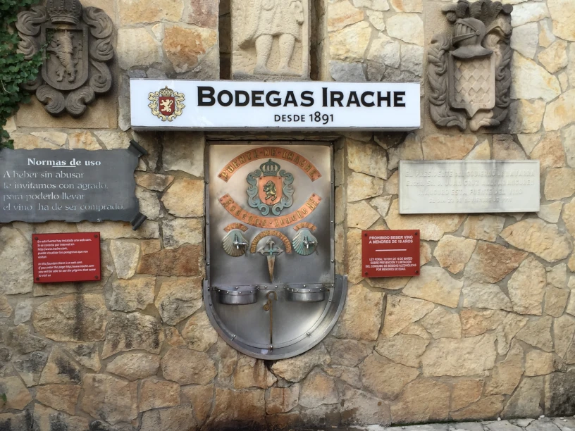
Just outside Estella, the Bodegas Irache wine fountain offers pilgrims the unique experience of filling their cups with either wine or water—free of charge. Above the fountain is the quote: "El vino da fuerza, el agua da vida"—"Wine gives strength, water gives life". For an extra treat, take a moment to visit the Wine Museum located just behind the fountain. The museum showcases fascinating antique wine-making artifacts and offers insight into the region's rich wine tradition. If you're financially able, consider leaving a small tip to support this unique tradition and the generosity extended to pilgrims.
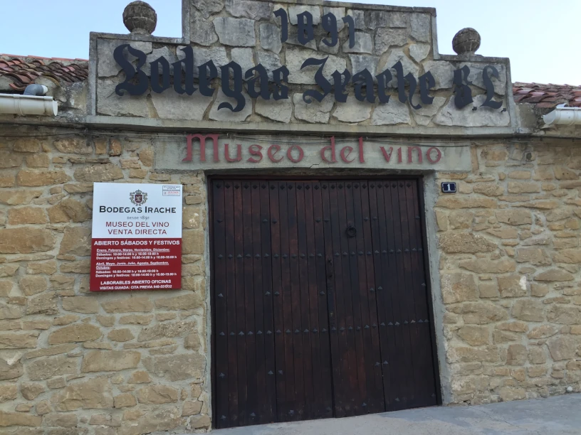
Keep in mind that the wine fountain is monitored by a live webcam, so visitors are reminded to enjoy responsibly and leave the area as they found it. Whether you choose wine or water, the Bodega Irache is a delightful and unforgettable stop that brings a touch of tradition, hospitality, and humor to your journey.
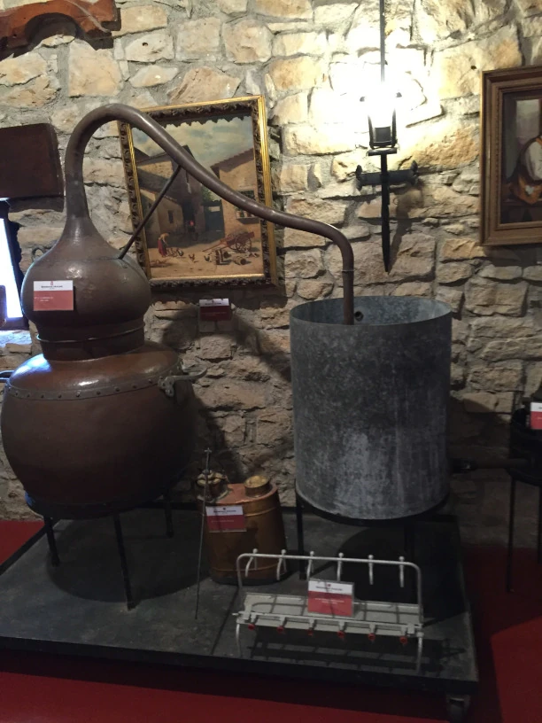
Burgos
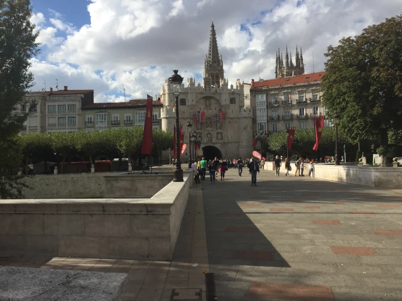
Several days after Logroño, you'll arrive in the next major city on the Camino Francés: Burgos. Along the way, you'll pass through the charming town of Santo Domingo de la Calzada, which is halfway between Logroño and Burgos. Santo Domingo is famous for a curious legend about a saint and a miracle involving a chicken. The story goes that a young pilgrim was falsely accused of theft and hanged, but thanks to Saint Dominic's intervention, the boy miraculously survived. When the townspeople doubted the miracle, the saint pointed to a roasted chicken and declared it would come back to life—and it did! As a result, you'll notice references to chickens throughout the town, including a live rooster and hen kept in the cathedral.
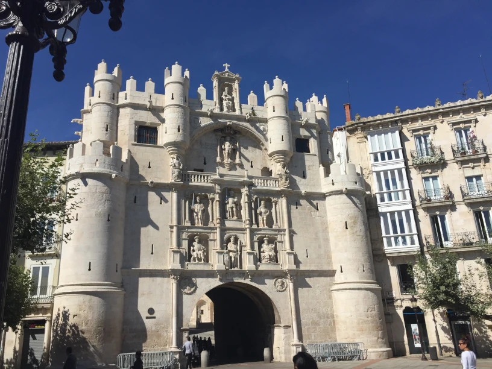
Burgos itself is known for its breathtaking Gothic cathedral, a UNESCO World Heritage Site, and the Castillo de Burgos, a medieval castle perched above the city with stunning views. Some pilgrims choose to begin their Camino here, as it offers a shorter route to Santiago. The municipal albergue in Burgos is a multi-story building that's often bustling with friendly pilgrims from all over the world. If you're starting your journey in Burgos, you can obtain your Credencial del Peregrino here at the municipal albergue to begin your adventure.
León
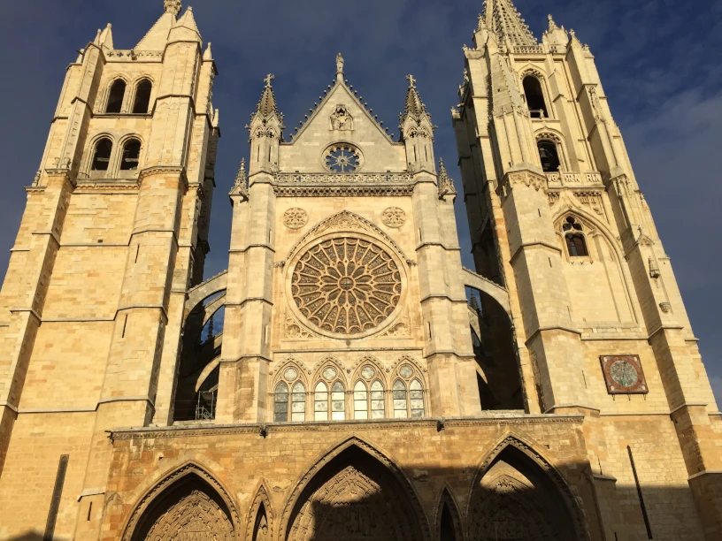
Shortly after leaving Burgos, you'll enter the Meseta, a vast and seemingly endless plateau. The Meseta is characterized by miles upon miles of flat, sandy paths, stretching under an open sky. Many pilgrims choose to skip this section entirely, as it can be physically and mentally challenging, especially in extreme weather. It's often hot, dry, and monotonous, but for those who walk it, there's a unique beauty to be found. The stunning horizons seem to blur the line between land and sky, offering moments of reflection and solitude.
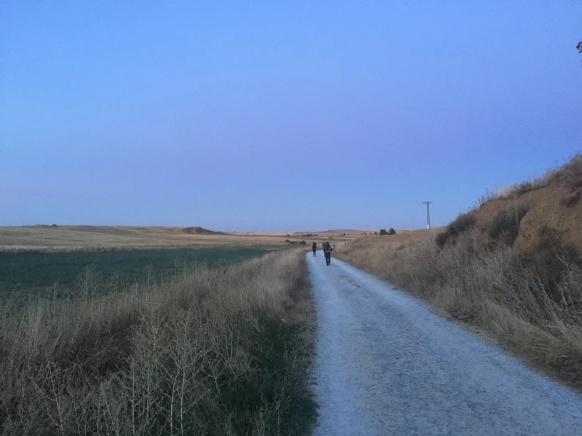
After days of walking through this barren landscape, you'll finally arrive in León, a bustling city that feels like an oasis after the isolation of the Meseta. León is famous for its breathtaking Gothic cathedral, a masterpiece of stained glass and architectural beauty. As you wander the city, you'll also notice numerous statues and references to lions, a nod to the city's name ("León" means "lion" in Spanish). This is one of the largest cities on the Camino, making it an ideal place to restock supplies, enjoy a rest day or two, and soak in the vibrant atmosphere before continuing your journey.
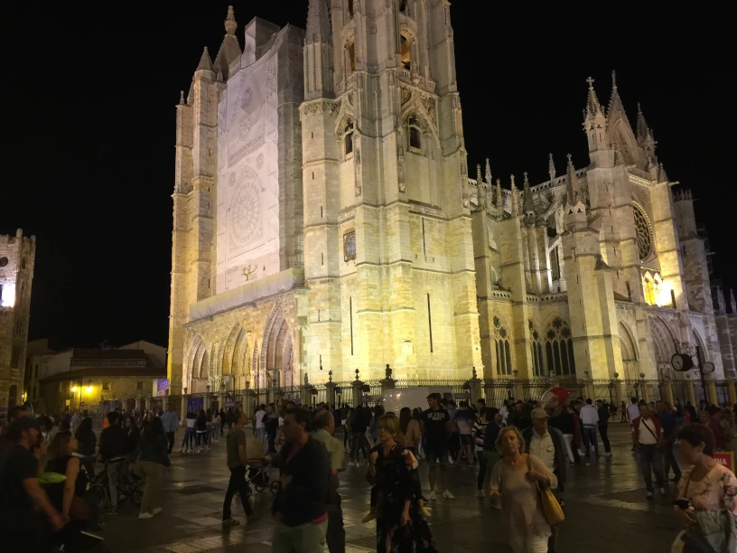
Ponferrada and Sarria
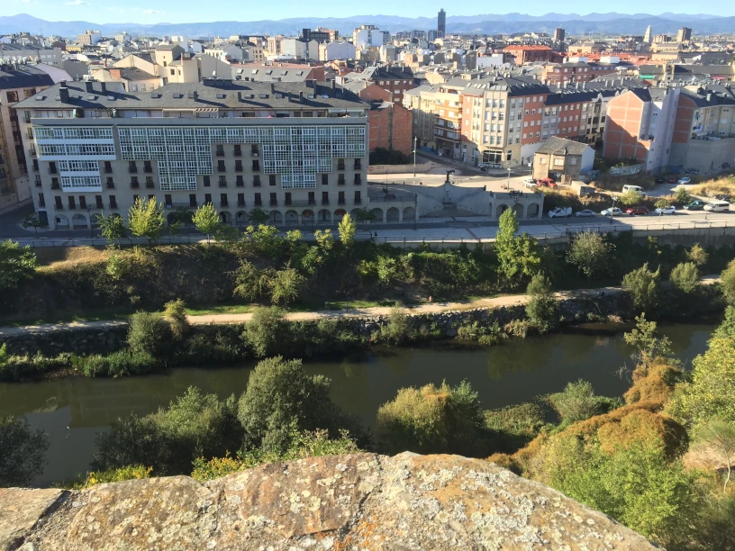
After León, the next major highlight is the small town of Ponferrada, known for its impressive and well-preserved Templar castle. This mostly intact medieval fortress is a must-see, and for a small fee, you can take a self-guided tour. It's often quiet and uncrowded.
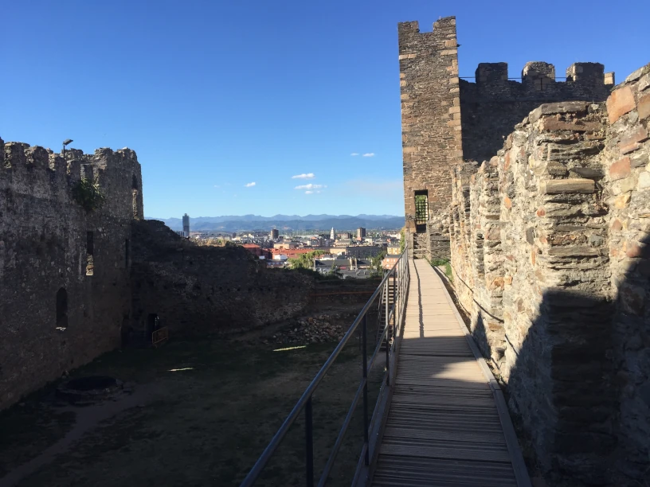
A few days later, you'll arrive in Sarria, the last point where pilgrims can start their journey and still qualify for the Compostela, the official certificate of completion. Sarria is home to the famous 100-kilometer marker, which marks the minimum distance required to earn the Compostela. These kilometer markers, found all along the Camino, guide pilgrims and show how far remains to Santiago de Compostela. Many pilgrims stop at the 100-km marker to take a celebratory photo, as it's a significant milestone on the journey.
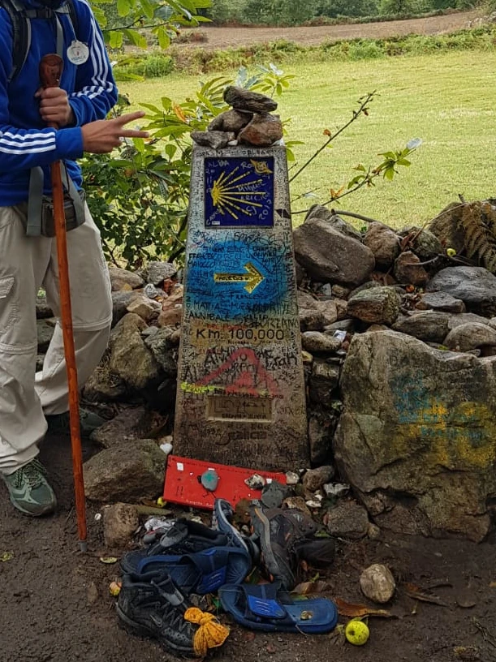
From Sarria onward, the Camino becomes much busier, as many pilgrims start their walk here due to time constraints or other reasons. The influx of new walkers changes the dynamic of the Camino, making it more social but also more crowded. Despite this, it's an exciting stretch, filled with anticipation as Santiago draws closer.
Santiago de Compostela
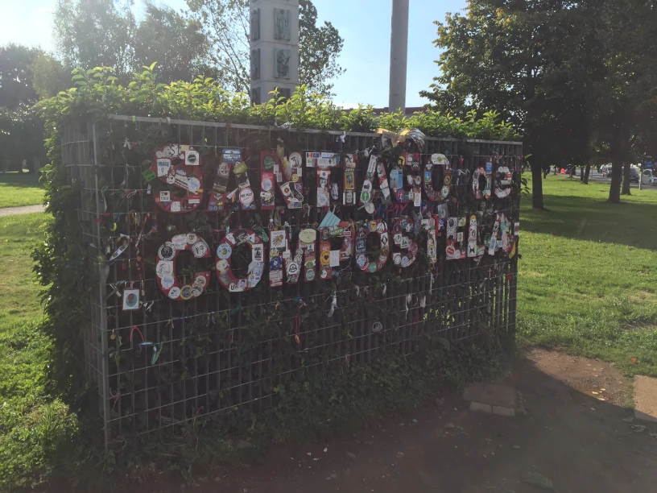
After 100 kilometers from Sarria, you'll finally reach your goal: Santiago de Compostela. The journey ends at the magnificent cathedral, where you'll likely find the courtyard alive with celebration. Pilgrims gather to reflect on their achievement, and you may reconnect with friends you met along the way but haven't seen for weeks. The atmosphere is festive, with people laughing, hugging, and occasionally bending the rules by drinking or smoking in the courtyard (both technically against the law). Among the crowd, you'll see some people filled with joy, others weary or injured, but almost everyone feeling a profound sense of accomplishment.
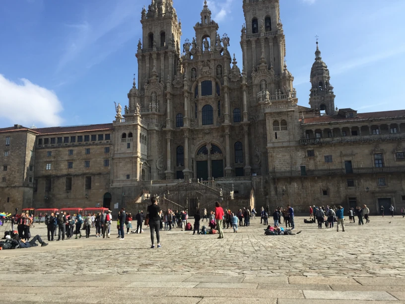
Take some time to enjoy everything, then make your way to the Pilgrim's Office (Oficina del Peregrino) to collect your Compostela, the official certificate of completion. You'll need to present your Credencial del Peregrino, stamped at each stop along your route, as proof of your journey. For a small fee, you can also request the Certificate of Distance, which records the length of your walk.
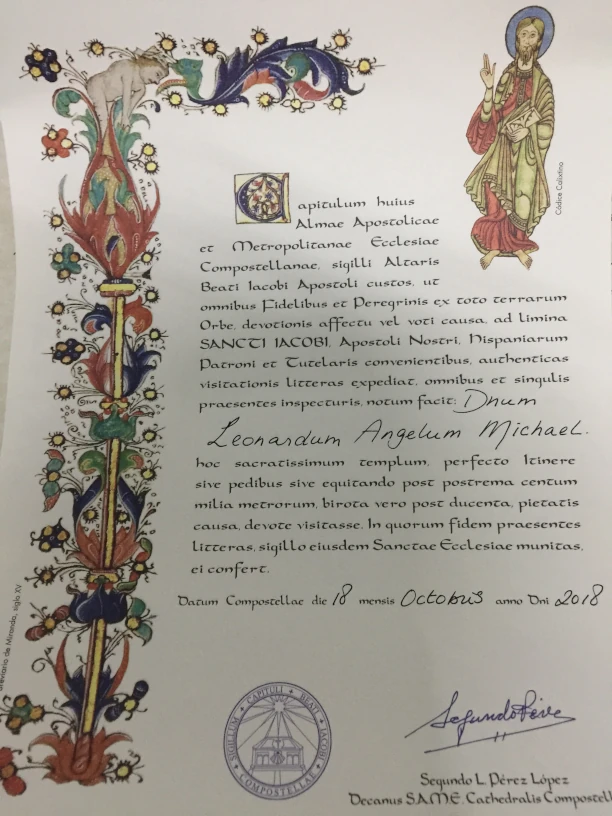
While Santiago is officially the end of the Camino, for some, the journey continues. Pilgrims often walk further to Finisterre and Muxía, adding a final chapter to their adventure. Whether you continue on or stay in Santiago, consider spending an extra day or two here. Celebrate with the friends you've made, explore the vibrant city, and take in its rich history. Be sure to visit the cathedral, and if your timing is right, you might even witness the Botafumeiro ceremony, where a giant incense burner swings through the church in a dramatic display of tradition.
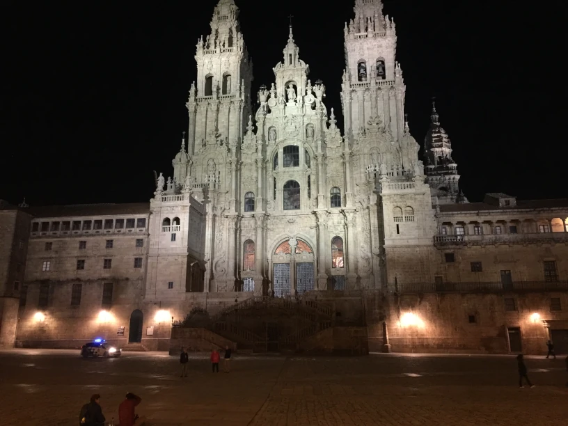
Finisterre and Muxía
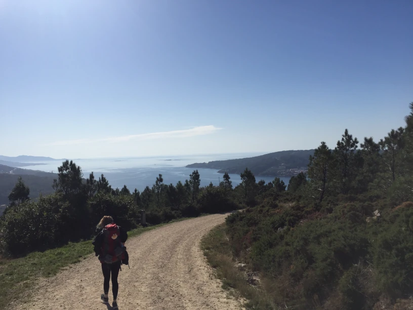
If time allows and you're craving more adventure, you can extend your Camino by continuing to Finisterre and even further to Muxía. Finisterre, located about 90 km from Santiago, is steeped in legend. In pre-Christian times, people believed it was the literal "end of the world" (hence the name, derived from Finis Terrae, meaning "End of the Earth") and made pilgrimages here to witness the edge of the known world.
The infrastructure on this route isn't as developed as the main Camino, so accommodations are less plentiful. However, you'll still find albergues and lodgings to rest during your final days of walking. As you approach Finisterre, the route takes you along scenic beaches, adding a dramatic and beautiful backdrop to your final steps. At the official “end of the world,” you'll find the 0.00 km marker, a symbolic finish to your pilgrimage and a popular spot for photos. The nearby Finisterre beach is breathtaking, with dramatic views of the ocean that provide a perfect place to reflect on your journey.
From Finisterre, you can continue an additional 30 km to Muxía, another destination of deep spiritual and historical significance for pilgrims. Muxía is home to the Our Lady of Barca Church (Santuario da Virxe da Barca), perched right on the coast with incredible ocean views. According to legend, the Virgin Mary appeared here in a stone boat to encourage Saint James in his missionary work. The church is also home to another 0.00 km marker, offering pilgrims a second symbolic conclusion to their journey. Inside, you can receive a final stamp for your Credencial del Peregrino, a meaningful way to close this chapter of your adventure.
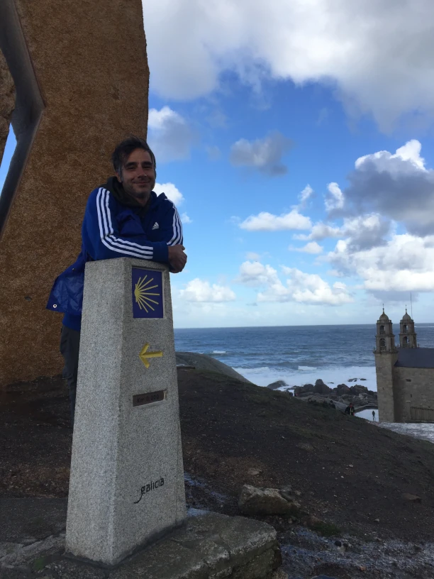
The views in Muxía, from the rugged coastline to the peaceful church, are truly breathtaking and provide a fitting end to a journey filled with challenges, beauty, and personal growth.
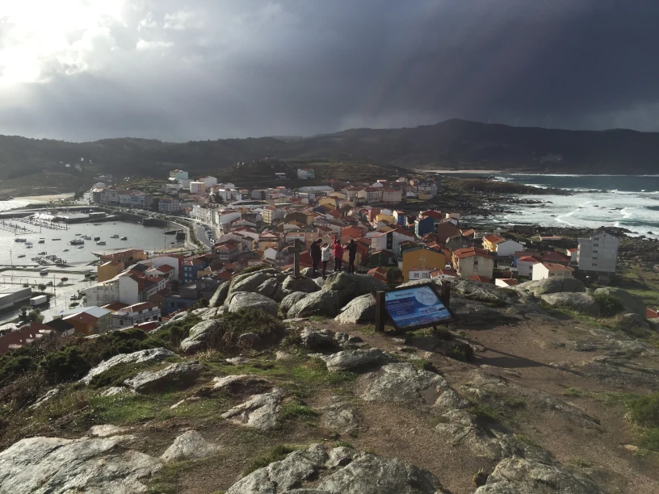